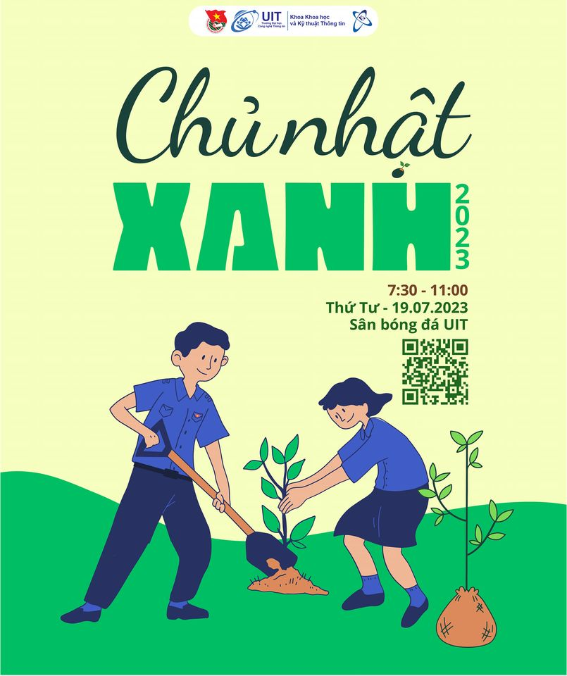

Ngày Chủ Nhật Xanh
- Hoạt động chính: Tập hợp cư dân vào ngày cuối tuần để quét dọn đường làng, ngõ xóm, bãi biển, ao hồ hoặc công viên công cộng.
- Cách thực hiện: Phân chia các nhóm nhỏ phụ trách từng khu vực để nhặt rác thải, thu gom túi nilon, và khơi thông cống rãnh bị tắc nghẽn.
- Lợi ích: Xóa bỏ các bãi rác tự phát, ngăn ngừa ô nhiễm nguồn nước và hạn chế dịch bệnh phát sinh trong cộng đồng.
